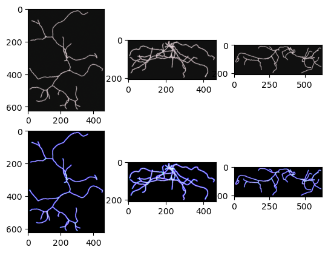

Tracking Inference
[1]:
%load_ext autoreload
%autoreload 2
%matplotlib widget
[13]:
from glob import glob
import json
from pathlib import Path
import sys
import torch
from torch.optim.adamw import AdamW
from torch.optim.adam import Adam
import tifffile as tf
import os
import matplotlib.pyplot as plt
import numpy as np
sys.path.append("../")
from environments.sac_tracking_env import Environment
from memory.buffer import PrioritizedReplayBuffer
from models import ResNet3D, ResidualBlock3D, ConvNet
from solvers import sac
from environments.neuron_tracking_environment import (
create_neuron_tracking_environment,
NeuronTrackingEnvironment
)
from neurotrack.data.neuron_data import (
Dataset,
DataLoader,
DataGenerator,
DrawingComplexityConfig
)
DEVICE = "cuda:0" if torch.cuda.is_available() else "cpu"
dtype = torch.float32
Instantiate environment
[5]:
config_path = "../configs/sac_inference_dynamic_complexity.json"
with open(config_path) as f:
params = json.load(f)
data_dir = params["data_dir"]
outdir = params["outdir"]
name = params["name"]
step_size = params["step_size"] if "step_size" in params else 1.0
step_width = params["step_width"] if "step_width" in params else 1.0
alpha = params["alpha"] if "alpha" in params else 1.0
beta = params["beta"] if "beta" in params else 1e-3
friction = params["friction"] if "friction" in params else 1e-4
repeat_starts = params["repeat_starts"] if "repeat_starts" in params else True
section_masking = params["section_masking"] if "section_masking" in params else False
rng_seed = params["rng_seed"] if "rng_seed" in params else 1
start_complexity = params["start_complexity"] if "start_complexity" in params else 0.0
branching = params["branching"] if "branching" in params else 0
patch_radius = 17
in_channels = 2
rng = np.random.default_rng(rng_seed)
# Create dataset
dataset = Dataset(data_dir=data_dir, rng=rng)
# Create dataloader
dataloader = DataLoader(dataset=dataset, complexity=start_complexity, rng=rng)
# Create environment
# alpha and beta removed to test new environment reward structure
env = NeuronTrackingEnvironment(
dataloader=dataloader,
radius=patch_radius,
step_size=step_size,
step_width=step_width,
max_len=1000,
friction=friction,
repeat_starts=repeat_starts,
section_masking=section_masking,
branching=branching
)
env.reset()
actor = ConvNet(chin=in_channels, chout=4)
actor = actor.to(device=DEVICE,dtype=dtype)
Q = ConvNet(chin=in_channels+3,chout=1)
Q = Q.to(device=DEVICE,dtype=dtype)
if "sac_weights" in params:
sac_path = params["sac_weights"]
state_dicts = torch.load(sac_path)#, weights_only=True)
actor.load_state_dict(state_dicts["policy_state_dict"])
Q.load_state_dict(state_dicts["Q1_state_dict"])
[6]:
sac.inference(env, actor, outdir, Q_net=Q, n_trials=1, save_paths=False, sync=False)
Processing image 1/253
---------------------------------------------------------------------------
KeyboardInterrupt Traceback (most recent call last)
Cell In[6], line 1
----> 1 sac.inference(env, actor, outdir, Q_net=Q, n_trials=1, save_paths=False, sync=False)
File ~/neurotrack/notebooks/../solvers/sac.py:613, in inference(env, actor, outdir, Q_net, n_trials, show, show_live, save_paths, sync, stochastic)
610 action = direction_dist.mean[0]
612 next_obs, reward, terminated, truncated, info = env.step(action, training=True)
--> 613 if Q_net is not None:
614 current_state = torch.cat((obs.to(DEVICE), torch.ones((obs.shape[0], 1, obs.shape[2], obs.shape[3], obs.shape[4]),device=DEVICE)*action[None,:,None,None,None].to(DEVICE)), dim=1)
615 q_val = Q_net(current_state)[:,0]
File ~/neurotrack/notebooks/../solvers/sac.py:613, in inference(env, actor, outdir, Q_net, n_trials, show, show_live, save_paths, sync, stochastic)
610 action = direction_dist.mean[0]
612 next_obs, reward, terminated, truncated, info = env.step(action, training=True)
--> 613 if Q_net is not None:
614 current_state = torch.cat((obs.to(DEVICE), torch.ones((obs.shape[0], 1, obs.shape[2], obs.shape[3], obs.shape[4]),device=DEVICE)*action[None,:,None,None,None].to(DEVICE)), dim=1)
615 q_val = Q_net(current_state)[:,0]
File _pydevd_bundle\\pydevd_cython.pyx:1697, in _pydevd_bundle.pydevd_cython.SafeCallWrapper.__call__()
File _pydevd_bundle\\pydevd_cython.pyx:634, in _pydevd_bundle.pydevd_cython.PyDBFrame.trace_dispatch()
File _pydevd_bundle\\pydevd_cython.pyx:1112, in _pydevd_bundle.pydevd_cython.PyDBFrame.trace_dispatch()
File _pydevd_bundle\\pydevd_cython.pyx:1090, in _pydevd_bundle.pydevd_cython.PyDBFrame.trace_dispatch()
File _pydevd_bundle\\pydevd_cython.pyx:494, in _pydevd_bundle.pydevd_cython.PyDBFrame.do_wait_suspend()
File ~/anaconda3/envs/tractography/lib/python3.9/site-packages/debugpy/_vendored/pydevd/pydevd.py:2188, in PyDB.do_wait_suspend(self, thread, frame, event, arg, exception_type)
2185 from_this_thread.append(frame_custom_thread_id)
2187 with self._threads_suspended_single_notification.notify_thread_suspended(thread_id, thread, stop_reason):
-> 2188 keep_suspended = self._do_wait_suspend(thread, frame, event, arg, trace_suspend_type, from_this_thread, frames_tracker)
2190 frames_list = None
2192 if keep_suspended:
2193 # This means that we should pause again after a set next statement.
File ~/anaconda3/envs/tractography/lib/python3.9/site-packages/debugpy/_vendored/pydevd/pydevd.py:2257, in PyDB._do_wait_suspend(self, thread, frame, event, arg, trace_suspend_type, from_this_thread, frames_tracker)
2254 queue.put(internal_cmd)
2255 wait_timeout = TIMEOUT_FAST
-> 2257 notify_event.wait(wait_timeout)
2258 notify_event.clear()
2260 finally:
File ~/anaconda3/envs/tractography/lib/python3.9/threading.py:581, in Event.wait(self, timeout)
579 signaled = self._flag
580 if not signaled:
--> 581 signaled = self._cond.wait(timeout)
582 return signaled
File ~/anaconda3/envs/tractography/lib/python3.9/threading.py:316, in Condition.wait(self, timeout)
314 else:
315 if timeout > 0:
--> 316 gotit = waiter.acquire(True, timeout)
317 else:
318 gotit = waiter.acquire(False)
KeyboardInterrupt:
[11]:
config_path = "../configs/train_sac_dynamic_complexity.json"
with open(config_path) as f:
params = json.load(f)
data_dir = params["data_dir"]
outdir = params["outdir"]
name = params["name"]
step_size = params["step_size"] if "step_size" in params else 1.0
step_width = params["step_width"] if "step_width" in params else 1.0
batch_size = params["batchsize"] if "batchsize" in params else 256
tau = params["tau"] if "tau" in params else 0.005
gamma = params["gamma"] if "gamma" in params else 0.99
lr = params["lr"] if "lr" in params else 0.001
alpha = params["alpha"] if "alpha" in params else 1.0
beta = params["beta"] if "beta" in params else 1e-3
friction = params["friction"] if "friction" in params else 1e-4
n_episodes = params["n_episodes"] if "n_episodes" in params else 100
init_temperature = params["init_temperature"] if "init_temperature" in params else 0.005
target_entropy = params["target_entropy"] if "target_entropy" in params else 0.0
repeat_starts = params["repeat_starts"] if "repeat_starts" in params else True
section_masking = params["section_masking"] if "section_masking" in params else False
branching = params["branching"] if "branching" in params else 0
rng_seed = params["rng_seed"] if "rng_seed" in params else 1
start_complexity = params["start_complexity"] if "start_complexity" in params else 0.0
patch_radius = 17
in_channels = 2
rng = np.random.default_rng(rng_seed)
# Create dataset
dataset = Dataset(data_dir=data_dir, rng=rng)
# Create dataloader
dataloader = DataLoader(dataset=dataset, complexity=start_complexity, rng=rng)
# Create environment
# alpha and beta removed to test new environment reward structure
env = NeuronTrackingEnvironment(
dataloader=dataloader,
radius=patch_radius,
step_size=step_size,
step_width=step_width,
max_len=1000,
friction=friction,
repeat_starts=repeat_starts,
section_masking=section_masking,
branching=branching
)
input_size = 2*patch_radius+1
init_temperature = 0.005
actor = ConvNet(chin=in_channels, chout=4)
actor = actor.to(device=DEVICE,dtype=dtype)
Q1 = ConvNet(chin=in_channels+3,chout=1)
Q1 = Q1.to(device=DEVICE,dtype=dtype)
Q2 = ConvNet(chin=in_channels+3,chout=1)
Q2 = Q2.to(device=DEVICE,dtype=dtype)
Q1_target = ConvNet(chin=in_channels+3,chout=1)
Q1_target = Q1_target.to(device=DEVICE,dtype=dtype)
Q2_target = ConvNet(chin=in_channels+3,chout=1)
Q2_target = Q2_target.to(device=DEVICE,dtype=dtype)
log_alpha = torch.log(torch.tensor(init_temperature).to(DEVICE))
log_alpha.requires_grad = True
if "sac_weights" in params:
sac_path = params["sac_weights"]
state_dicts = torch.load(sac_path)#, weights_only=True)
actor.load_state_dict(state_dicts["policy_state_dict"])
Q1.load_state_dict(state_dicts["Q1_state_dict"])
Q2.load_state_dict(state_dicts["Q2_state_dict"])
# Load target networks if available
if "Q1_target_state_dict" in state_dicts:
Q1_target.load_state_dict(state_dicts["Q1_target_state_dict"])
else:
Q1_target.load_state_dict(Q1.state_dict())
if "Q2_target_state_dict" in state_dicts:
Q2_target.load_state_dict(state_dicts["Q2_target_state_dict"])
else:
Q2_target.load_state_dict(Q2.state_dict())
else:
Q1_target.load_state_dict(Q1.state_dict())
Q2_target.load_state_dict(Q2.state_dict())
# Initialize optimizers
Q1_optimizer = AdamW(Q1.parameters(), lr=lr)
Q2_optimizer = AdamW(Q2.parameters(), lr=lr)
actor_optimizer = AdamW(actor.parameters(), lr=lr)
log_alpha_optimizer = Adam([log_alpha], lr=lr)
# Load optimizer states if available
if "sac_weights" in params:
if "Q1_optimizer_state_dict" in state_dicts:
Q1_optimizer.load_state_dict(state_dicts["Q1_optimizer_state_dict"])
if "Q2_optimizer_state_dict" in state_dicts:
Q2_optimizer.load_state_dict(state_dicts["Q2_optimizer_state_dict"])
if "actor_optimizer_state_dict" in state_dicts:
actor_optimizer.load_state_dict(state_dicts["actor_optimizer_state_dict"])
memory = PrioritizedReplayBuffer(100000, obs_shape=(in_channels,input_size,input_size,input_size), action_shape=(3,), alpha=0.8)
[14]:
script_path = Path(os.path.abspath(""))
name = "sac_training_test"
logdir = script_path.parent.parent / "logs" / name
os.makedirs(logdir, exist_ok=True)
sac.train(env, actor, Q1, Q2, Q1_target, Q2_target, log_alpha,
actor_optimizer, Q1_optimizer, Q2_optimizer, log_alpha_optimizer,
memory, target_entropy, batch_size, gamma, tau, outdir, logdir,
name, show=True, pause_after_episode=False, show_live=False,
update_after=256, updates_per_step=1, update_every=1, n_episodes=n_episodes)
Starting episode 1/100000
---------------------------------------------------------------------------
AttributeError Traceback (most recent call last)
Cell In[14], line 5
3 logdir = script_path.parent.parent / "logs" / name
4 os.makedirs(logdir, exist_ok=True)
----> 5 sac.train(env, actor, Q1, Q2, Q1_target, Q2_target, log_alpha,
6 actor_optimizer, Q1_optimizer, Q2_optimizer, log_alpha_optimizer,
7 memory, target_entropy, batch_size, gamma, tau, outdir, logdir,
8 name, show=True, pause_after_episode=False, show_live=False,
9 update_after=256, updates_per_step=1, update_every=1, n_episodes=n_episodes)
File ~/neurotrack/notebooks/../solvers/sac.py:412, in train(env, actor, Q1, Q2, Q1_target, Q2_target, log_alpha, actor_optimizer, Q1_optimizer, Q2_optimizer, log_alpha_optimizer, memory, target_entropy, batch_size, gamma, tau, outdir, logdir, name, update_after, updates_per_step, update_every, n_episodes, dynamic_complexity, show, pause_after_episode, show_live, pause_after_step)
409 # take step, get observation and reward, and move index to next streamline
410 next_obs, reward, terminated, truncated, info = env.step(action, training=learning_started)
--> 412 ep_return += reward.cpu().item()
414 # Show state after every step
415 if show_live:
AttributeError: 'tuple' object has no attribute 'cpu'
[6]:
# config_file = "../configs/sac_inference_neuromorpho_with_artifacts.json"
config_file = "../configs/sac_inference_gold166.json"
# config_file = "../configs/sac_inference_simulated.json"
with open(config_file) as f:
params = json.load(f)
img_path = params["img_path"]
outdir = params["outdir"]
name = params["name"]
step_size = params["step_size"] if "step_size" in params else 1.0
step_width = params["step_width"] if "step_width" in params else 1.0
alpha = params["alpha"] if "alpha" in params else 1.0
beta = params["beta"] if "beta" in params else 1e-3
friction = params["friction"] if "friction" in params else 1e-4
repeat_starts = params["repeat_starts"] if "repeat_starts" in params else False
patch_radius = 17
inchannels = 1
if "classifier_weights" in params:
classifier_path = params["classifier_weights"]
classifier_state_dict = torch.load(classifier_path)#, weights_only=True)
classifier = ResNet3D(ResidualBlock3D, [3, 4, 6, 3], in_channels=inchannels, num_classes=1)
classifier = classifier.to(device=DEVICE, dtype=dtype)
classifier.load_state_dict(classifier_state_dict)
classifier.eval()
else:
classifier = None
env = Environment(img_path,
radius=patch_radius,
step_size=step_size,
step_width=step_width,
max_len=10000,
max_paths=1000,
alpha=alpha,
beta=beta,
friction=friction,
classifier=classifier,
repeat_starts=repeat_starts)
Instantiate actor network and Q-network
[7]:
in_channels = 2
actor = ConvNet(chin=in_channels, chout=4)
actor = actor.to(device=DEVICE,dtype=dtype)
Q = ConvNet(chin=in_channels+3,chout=1)
Q = Q.to(device=DEVICE,dtype=dtype)
if "sac_weights" in params:
sac_path = params["sac_weights"]
state_dicts = torch.load(sac_path)
actor.load_state_dict(state_dicts["policy_state_dict"])
Q.load_state_dict(state_dicts["Q1_state_dict"])
[10]:
env.img.data.shape
[10]:
torch.Size([2, 108, 658, 787])
[18]:
env.img.data.max()
[18]:
tensor(255, dtype=torch.uint8)
[15]:
plt.hist(env.img.data[0].flatten(), bins=100)
plt.show()
[29]:
plt.close("all")
plt.imshow(env.img.data[0].amax(0))
plt.show()
[20]:
sac.inference(env, actor, outdir, Q_net=Q, n_trials=1, save_paths=False, sync=False)
0%| | 0/28 [00:13<?, ?it/s]
---------------------------------------------------------------------------
KeyboardInterrupt Traceback (most recent call last)
Cell In[20], line 1
----> 1 sac.inference(env, actor, outdir, Q_net=Q, n_trials=1, save_paths=False, sync=False)
File ~/neurotrack/notebooks/../solvers/sac.py:542, in inference(env, actor, outdir, Q_net, n_trials, show, show_live, save_paths, sync, stochastic)
540 shell = get_ipython().__class__.__name__ # type: ignore
541 if shell:
--> 542 show_state(env, fig, live=True, reward=reward.cpu().item())
543 except NameError:
544 pass
File ~/neurotrack/notebooks/../plot/tracking_interface.py:159, in show_state(env, fig, live, ep_return, reward, policy_loss)
156 img_vol = img # already 3D
158 img_proj = img_vol.amax(dim=0) # (W, D)
--> 159 path_proj = path.amax(dim=0) # (W, D)
161 # Show RGB MIP (left axis)
162 ax_left.imshow(img_proj, cmap='gray', vmax=1.0, vmin=0.0)
KeyboardInterrupt:
Perform tracking
[ ]:
sac.inference(env, actor, outdir, Q_net=Q, n_trials=5, save_paths=True, sync=False)

num branches: 128
num long paths: 76
estimated return: 1596.43
coverage: 0.98
100%|██████████| 73/73 [2:34:22<00:00, 126.88s/it]
[80]:
import os
import numpy as np
outdir = params["outdir"]
out_files = os.listdir(outdir)
max_coverages = []
coverage_max_returns = []
for out in out_files:
out = os.path.join(outdir, out)
inference_outputs = np.load(out, allow_pickle=True)
coverages = inference_outputs["coverages"]
estimated_returns = inference_outputs["estimated_returns"]
max_coverages.append(np.max(coverages))
coverage_max_returns.append(coverages[np.argmax(estimated_returns)])
[82]:
np.median(max_coverages), np.median(coverage_max_returns)
[82]:
(np.float32(0.9884575), np.float32(0.9788084))
[9]:
ref_dir = "/home/brysongray/data/neurotrack_data/gold166/gold166_soma-removed_training_set/"
ref_img_files = [f for x in os.walk(ref_dir) for f in glob(os.path.join(x[0], "*_image.tif"))][0]
outdir = params["outdir"]
out_files = os.listdir(outdir)
# random_ids = np.random.choice(len(out_files))
fig, ax = plt.subplots(5,5, figsize=(20,20))
ax = ax.ravel()
for i in range(25):
f = os.path.join(outdir, out_files[i])
inference_out = np.load(f, allow_pickle=True)
labeled_neuron = inference_out["labeled_neuron"]
if labeled_neuron.dtype == np.uint8:
labeled_neuron = labeled_neuron / np.array(255., dtype=np.float32)
name = out_files[i].split('_08-13-25*')[0][:-1]
reference_img_path = [f for f in ref_img_files if f.split('/')[-1].split('_image.tif')[0] == name][0]
ref_img = tf.imread(reference_img_path)
if ref_img.dtype == np.uint8:
ref_img = ref_img / np.array(255., dtype=np.float32)
ax[i].imshow(ref_img.max(0))
---------------------------------------------------------------------------
IndexError Traceback (most recent call last)
Cell In[9], line 17
14 labeled_neuron = labeled_neuron / np.array(255., dtype=np.float32)
16 name = out_files[i].split('_08-13-25*')[0][:-1]
---> 17 reference_img_path = [f for f in ref_img_files if f.split('/')[-1].split('_image.tif')[0] == name][0]
18 ref_img = tf.imread(reference_img_path)
19 if ref_img.dtype == np.uint8:
IndexError: list index out of range